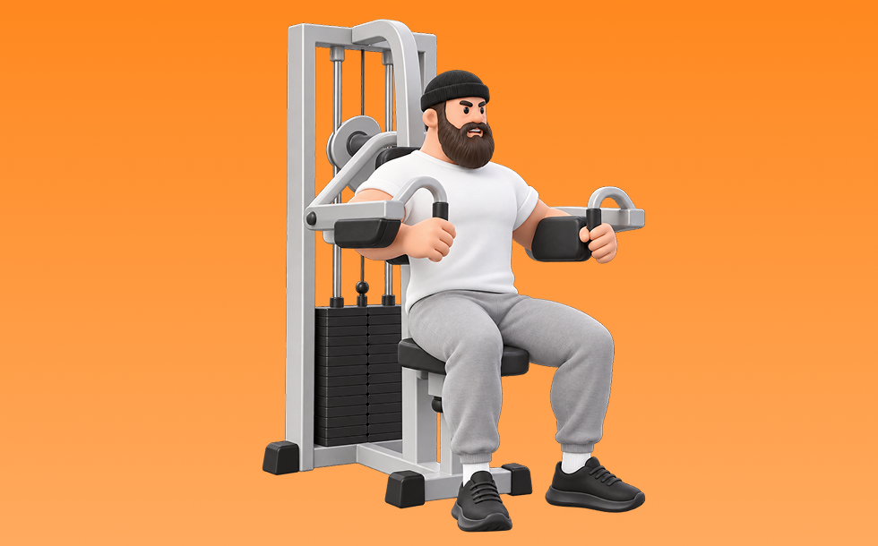

ラテラルレイズマシン

ラテラルレイズマシンとは、マシンを使って「腕を横に上げる」動作で肩中部（三角筋中部）を鍛える種目です。軌道が安定して狙った部位に効かせやすいのが特徴で、反動を抑えてコントロールしながら反復します。肩幅を作り、逆三角形のシルエットづくりが期待できます。
- 対象部位
- 肩
- 器具
- マシン
- 記録形式
- 重量・回数
- 別名
- ショルダーアブダクションマシン
YouTube動画
-
【初心者】マシン・ラテラルレイズの効果的なやり方 | 三角筋中部を強烈に鍛える種目【ビーレジェンド プロテイン】
-
最も難しいマシン「ラテラルレイズマシン」を使いこなそう！！挙げるタイミングを参考に！【ジュラトレ肩/７種目目】
-
筋トレ初心者が最初に覚えるべき肩トレのマシン使い方解説【エニタイムフィットネス】
-
【丸い肩はこれで作れ！】IFBB PRO 寺島遼がマシンサイドレイズ/肩トレを徹底解説！
-
ラテラルレイズの正しい使い方 ゴールドジム熊本EAST店長が教える、正しいラテラルレイズの使い方、徹底解説
-
【肩強化】スタンディングラテラルレイズ使用方法
-
【HAMMER】ラテラルレイズ
-
【肩トレ】ボディビル界のレジェンド・鈴木雅の細かすぎるマシン解説 “マシンで肩トレ”！『BULK UP CAMP』#8 完全版
-
〈肩〉ラテラルレイズ(Lateral Raise) 【SHUA】
-
ラテラルレイズ
-
【三角筋】1年間ほぼ毎日サイドレイズで筋肥大したフォームと筋肥大しないフォーム【中部】
-
女性にも鍛えてほしい"肩"の種目！サイドレイズ【筋トレ】【女子】
YouTubeショート
-
多くのトレーニーが間違えているラテラルレイズのトレーニング方法 #ジム#フィットネス #トレーニー #ラテラルレイズ #ソネットフィットネス
-
【初心者必見】世界一わかりやすいサイドレイズ#プロテイン #筋肉 #筋トレ初心者 #筋トレ #fitness #肩トレ #サイドレイズ
-
絶対にデカくなるサイドレイズやり方#筋トレ #肩トレ #筋トレ初心者 #shoulderworkout
-
【1分でわかる】ラテラルレイズの使い方 #筋トレ #筋肉 #トレーニング #ジム #肩トレ #肩こり
-
こんなサイドレイズ今すぐやめて #short #youtubeshorts #プロテイン #筋肉博士 #筋トレ大学 #山本義徳 #サイドレイズ #肩トレ
-
1分で分かるマシン解説【ラテラルレイズ】
-
マシンを使ったショルダープレスのコツ
-
怪我をしないための超丁寧なサイドレイズを持田選手が教えてくれました！！#トレーニング #筋トレ #volix #fitness #workout #肩トレ
-
サイドレイズのやり方🔥 #筋トレ #サイドレイズ #肩トレ #筋肉社長
-
正しいケーブルサイドレイズのやり方
-
【肩】スタンディングラテラルレイズ
-
ラテラルレイズ使い方説明動画
-
サイドレイズを効かせるコツ！ #Shorts
-
ラテラルレイズの使い方(SHUA)
-
持田選手にサイドレイズについてレクチャーしていてもらいました！次はどの種目の解説をやってほしいかコメントしてね！#筋トレ #volix #トレーニング #workout #肩トレ #ちょこっと惜しい
-
【万代店】サイドレイズマシン 使い方動画
-
ラテラルレイズマシン
-
肩トレのやり方🔥〜インクラインサイドレイズ基礎編〜 #筋トレ #筋肉 #筋肉社長 #マッチョ #肩トレ
-
【 ラテラルレイズ】マシン紹介 第３弾！
-
このサイドレイズはやめろ！#shorts
-
めっちゃ肩がデカくなった今やってるメニュー！#shorts
-
肩トレこの3種類で十分やと思うねんけど、マッチョ警察の方々どう思う？
-
肩トレのやり方🔥 〜リアに効かせるトレーニング基礎編〜 #筋トレ #筋肉社長 #筋肉 #肩トレ
-
ラテラルレイズ（Lateral Raise Machine）
-
サイドレイズやり方多すぎる
-
【IFBB PRO 上里選手】筋トレ初心者必見!!背中種目で注意すべきこと
-
ばちばちに効く肩のリア種目
-
トレーニングマシンの使い方、ラテラルレイズ（三角筋の強化）
-
【誰でもメロン肩になれる方法がこれ】#Shorts
-
爆発的に肩がデカくなるサイドレイズ
-
今日の肩トレ！#筋トレ大学生 #筋トレ男子 #gymmotivation #fitnessmotivation
-
マシンラテラルレイズのやり方-肩を鍛える筋トレ方法
-
ケーブルサイドレイズフォーム解説#肩トレ#ダイエット #筋トレ #パーソナルジム #サイドレイズ
-
【ラテラルレイズ】by PT河野
-
【今すぐやめろ】三角筋中部が全く成長しなくなるケーブルサイドレイズ(科学的肩トレ) #shorts
-
正しいダンベルロウ4つのポイント #筋トレ
-
時間がない時の肩トレはコレだ！ #筋トレ
動作方法
- 対象部位の力を抜かずに構える
- 反動を使わず、可動域を丁寧に使う
- 戻し動作をゆっくり行う
動作ポイント
- 可動域を急に狭めない
- 対象部位の緊張を保つ
ワンポイントアドバイス
- 重量よりも肩の軌道を安定させる
- 首まわりの力みを減らして行う
目的別回数設定
目的や体力に応じた一般的な目安です。無理のない範囲で調整してください。
- 筋力アップ
- 1〜5回
- 筋肥大
- 6〜12回
- 持久力アップ
- 13〜20回
YouTube動画について
動画はYouTubeの公開情報をもとに表示しています。内容は投稿者によるもので、Biggrによる監修ではありません。
アプリを入手
筋トレやトレーニングの記録はBiggrにお任せください。今すぐ無料で使い始められます。